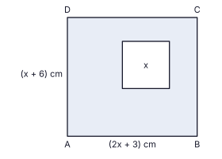

Amaya and Pradeep each want to buy a photocopier for a library. Its cash price is Rs. 60 000.
| Amaya's method | Pradeep's method |
|---|---|
| She takes a bank loan of Rs. 60 000 for one year at a simple interest rate of 14% per annum, and settles the loan with the interest in one payment at the end of the year. | He pays the price in 12 equal monthly instalments. Each instalment includes Rs. 5 000 of the price, and the total interest charged for the year is Rs. 5 460. The interest is charged on the part of the price that remains unpaid each month (the reducing balance). |
The incomplete table below gives values of the function y = x2 − 4x − 5 for −2 ≤ x ≤ 6. The graph of the function is symmetric about a vertical line.
| x | −2 | −1 | 0 | 1 | 2 | 3 | 4 | 5 | 6 |
|---|---|---|---|---|---|---|---|---|---|
| y | 7 | 0 | −5 | −8 | −9 | −8 | .... | 0 | 7 |
(b) Hence write the function in the form y = (x + p)(x + q).
(a) Using the graph, find the range of values of x for which y < −6.
(b) Find the length of AB, correct to the first decimal place.
PQ is the vertical chimney of a factory, standing on level ground, and PQ = 40 m. A bus is at the point A and a car is at the point B on the ground, as shown in the figure. The points A, B and Q are in a straight line. From P the angle of depression of A is 25° and the angle of depression of B is 50°. Copy the figure on to your answer sheet.

In a factory a rectangular metal sheet ABCD with AB = (2x + 3) cm and BC = (x + 6) cm has a square hole of side x cm cut out of it, as shown in the figure. The area of the metal that remains is 93 cm2.

A bus takes a group of 40 people, adults and children, on a trip. An adult ticket costs Rs. 90 and a child ticket costs Rs. 60. The total money collected from the tickets was Rs. 2 850. Let the number of adults be x and the number of children be y.
The table shows the number of books borrowed from a library on each of 30 days.
| Number of books borrowed | 10 – 19 | 20 – 29 | 30 – 39 | 40 – 49 | 50 – 59 | 60 – 69 |
|---|---|---|---|---|---|---|
| Number of days | 1 | 2 | 6 | 8 | 7 | 6 |